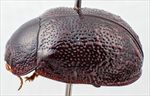
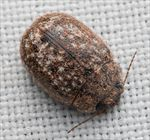
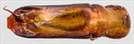
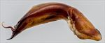
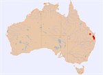

Click on images to enlarge
![Male, Conondale Range, S.E. Queensland [2004-009]](assets/image/Ta238/Ta238_A04-009_SM.jpg){kind=link}

Male, Conondale Range, S.E. Queensland [2004-009]
![Female, Brisbane, S.E. Queensland [2025-301] (photo Christopher Burwell)](assets/image/Ta238/Ta238_A25-301_SM.jpg){kind=link}

Female, Brisbane, S.E. Queensland [2025-301] (photo Christopher Burwell)
![Aedeagus, dorsal view [2004-009, Conondale Ra., S.E. Queensland]](assets/image/Ta238/Ta238_Ad04-009a_SM.jpg){kind=link}

Aedeagus, dorsal view [2004-009, Conondale Ra., S.E. Queensland]
![Aedeagus, lateral view [2004-009, Conondale Ra., S.E. Queensland]](assets/image/Ta238/Ta238_Ad04-009b_SM.jpg){kind=link}

Aedeagus, lateral view [2004-009, Conondale Ra., S.E. Queensland]
{kind=link}

Distribution
Name
Trachymela sp. Ta238
Reference specimen
2004-009, Conondale Range, S.E. Queensland
Adult Description
Length: ♀ 8.1-8.8 mm (2), ♂ 7.9-8.5 mm (4).
Colour: head: uniformly dark-brown with black-tipped mandibles, labrum similar or lighter in shade; antennomeres 1-4 mid- to dark-brown, 5-11 considerably darker, generally grading towards a darker shade (even black) distally; pronotum: uniformly very dark-brown (same or more often fractionally darker than head) in discal region, usually somewhat paler towards lateral margins, sometimes a fractionally darker band present in line with VR3; scutellum: dark brown with a broad black border; elytra: very dark-brown, same shade as pronotum, usually with small streaks or spots of a fractionally lighter shade that coincide with elevated interstices or verrucae, humeral callus of same shade as surrounding region; venter: head and thoracic and abdominal very dark reddish-brown to black, legs similar or fractionally paler, inside surface of elytral epipleura black. Cuticular wax: mostly mid-brown in colour, relatively evenly and quite densely distributed except for an almost wax-free small region along elytral suture just behind summit, streaks and small patches of gray wax are always present within a band roughly between VR3 and VR6 and extending from anterior margin to about 80% of distance to apex, some smaller and less conspicuous grey patches also present in elytral marginal area.
Shape: moderate-sized, noticeably flattened, greatest height viewed laterally behind middle of elytral margin. Head; punctures relatively large (pd~1.5-2xef) and evenly and quite densely packed. Antennae moderately long (AL ♂=43-45%BL, ♀=39%BL), filiform. Pronotum; almost evenly curved transversely with only a suggestion of a small explanation at extreme lateral margins, a very shallow depression sometimes present behind the outside edge of each eye usually with a broad elevated area in its middle that may completely obliterate it, punctures clearly impressed, puncturation somewhat variable, punctures may be evenly distributed and moderately dense in discal area or may be less densely and more unevenly, but always becoming much coarser towards lateral margins. Much finer punctures are scattered very unevenly among the larger ones. Front margins join lateral margins in a smoothly rounded right-angle, with lateral margin usually straight for a short length then curving smoothly and gradually towards rear margin. Scutellum; smooth or slightly rough, and unpunctured. Elytra; surface very lightly curved in anterior half, curvature becoming much greater in posterior half, punctures distinct anteriorly and in the area around elytral summit, becoming much less so in posterior third, and relatively evenly distributed, interstices quite convex except for the area around elytral summit, giving elytra a rough appearance, some verrucae are present in posterior third of disc, particularly in VR3 and VR5, one or two may be noticeably elongated, surface very slightly discontinuous under humeral callus, lateral noticeably margins sinuous. Vertical extension of epipleura small (HCE/PW=0.29-0.31), inner edge either lacking setae posteriorly, or with just a few towards elytral apex. Venter; Prosternal process almost parallel-sided and moderately broad, closed anteriorly, a very light scatter of setae on prosternal process and mesosternum, one long seta on anterior, median and posterior trochanter; front edge of metasternum beveled, truncate. Aedeagus; long (LPE/BL 34-36%BL), in dorsal view, broadest near basal section, then sides parallel or converging almost imperceptibly for much of the length towards ostium, where the sides converge towards apex in a smooth arc, dorsal surface smoothly curved with faint dorso-median channel usually present, dorso-lateral channels well developed, spatula broad and well-developed terminating in a broad, flat apex, ostium large; in lateral view, quite thick, a bend near junction of basal and central section then almost straight for whole of central section before the apical 15% bends prominently downwards again, thinning towards apex over 40% of length, tip strongly deflexed, flagellum thick at exit from ostium and tightly curving through about 180° before quickly tapering down in thickness.Larvae
unknown.
Eggs
unknown.
Similar species
Ta38 – this species is very similar in appearance, but its dorsal texture is often somewhat less shiny and smooth. One of the main distinctions between the two species is that the line of setae along the inner edge of the epipleura is much more extensive in Ta38 than in Ta238, where it is very short or even absent completely. The pronotum in specimens of Ta38 is more often deeply and evenly punctured than in Ta238. The aedeagus of Ta238 is noticeably more slender and considerably shorter (more than 10%) than is typical for individuals of Ta38 of that size and its curvature is substantially more pronounced.
Notes
This is one of those species of Trachymela where the “greatest height” of the insect is behind the middle of the elytral margin. See Blackburn (1897a), p. 641 for more details.
Almost all specimens of this species have been obtained at lights – the only known host record is from an unidentified bloodwood (either Corymbia or Blakella).
A small tenereal female specimen from Amamoor [1999-0454] and a tenereal male from Eidsvold [2003-272] are considered to belong to this species.Copyright © 2026. All rights reserved.